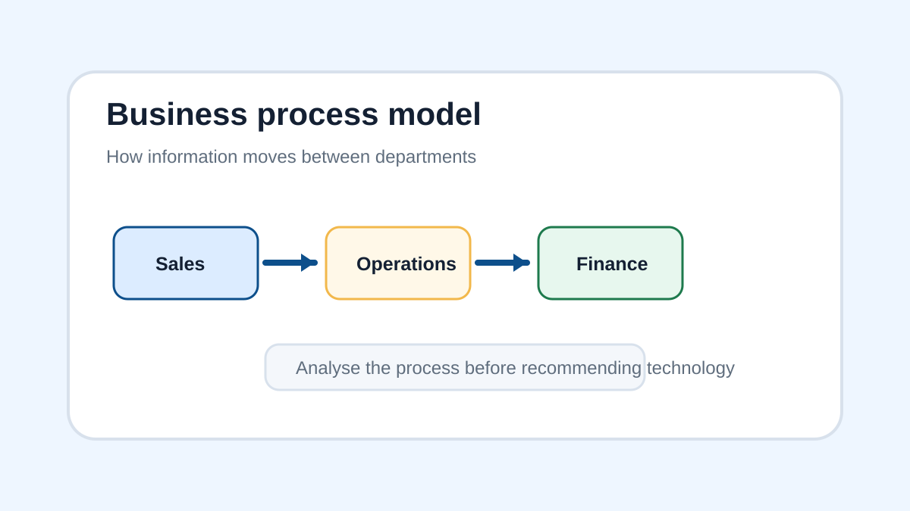

Unit 21 Workbook - Learning Aim A
Introduction - Your role as an IT business analyst or consultant
Imagine a business has a serious problem, but nobody fully understands why it is happening.
Customers are complaining because orders are late. Staff are entering the same information into three different systems. Managers cannot get accurate reports. Paper forms are being lost. The business has bought new technology before, but it did not solve the problem because nobody properly investigated how the business actually worked.
This is where an IT business analyst becomes important.
An IT business analyst acts like a problem-solver between the business and the technology. Their job is not just to say, “buy a new system”. Their job is to understand what the organisation is trying to achieve, investigate how work is currently being done, identify what is going wrong and recommend improvements that actually solve the problem.
An IT consultant may do similar work, but is often brought in from outside the organisation to give expert advice. A consultant might be asked to improve a booking system, reduce wasted admin time, help departments share information, replace a paper-based process or recommend technology that helps the business grow.
To do this well, you need to understand both sides:
- The business side - what the organisation wants to achieve, how departments work, what customers need and where money or time is being wasted.
- The technology side - what systems, tools or digital processes could make the organisation faster, more accurate, more secure or more competitive.
By the end of this learning aim, you should be able to look at an organisation and ask the kinds of questions an analyst would ask:
- What is this organisation trying to achieve?
- Which departments are involved?
- What processes are being used?
- Are those processes helping or holding the organisation back?
- Why might the process need to change?
- What technology could help, and why?
Part 1 - Business aims and objectives
Why this matters to an IT business analyst
Before you recommend a new system or technology, you need to understand what the organisation is trying to achieve. A weak analyst might suggest technology because it looks impressive. A strong analyst links every recommendation to the organisation’s aims and objectives.
For example, if a company’s objective is to improve customer satisfaction, you might focus on improving customer support, order tracking or response times. If the objective is to reduce costs, you might focus on automation, reducing paper use or removing duplicate data entry.

A business aim is a broad goal that an organisation wants to achieve. For example, a business may want to become the most trusted company in its market.
A business objective is more specific and measurable. For example, the same business may set an objective to increase customer satisfaction ratings by 15% within one year.
A business process is a set of linked activities used to complete work. Business processes should support the organisation’s aims and objectives.
A mission statement explains the overall purpose of an organisation. It usually explains what the organisation does, who it serves and what it wants to achieve.
| Term | Meaning | Example |
|---|---|---|
| Business aim | A broad long-term goal | Become the leading online clothing retailer |
| Business objective | A specific target | Deliver 95% of orders within two working days |
| Mission statement | A short statement explaining the organisation’s purpose | To provide affordable, high-quality clothing |
| Business process | A set of linked activities used to complete work | Taking an order, checking stock, packing the item and sending it |
Comprehension questions
Q1) State what is meant by a business aim. (1 mark)
A business aim is a broad long-term goal an organisation wants to achieve.
Q2) State what is meant by a business objective. (1 mark)
A business objective is a specific and measurable target.
Q3) Explain the purpose of a mission statement. (2 marks)
A mission statement explains the overall purpose of the organisation. It may explain what the organisation does, who it serves and what it wants to achieve.
Part 2 - Organisational models and department functions
An organisation is normally divided into departments. Each department has a different function, but their work is connected. A change to one department’s process can affect other departments.
For example, if the sales department starts using a new customer ordering system, the warehouse may also need access to the data so it can pick and pack orders accurately. Finance may need the same data to generate invoices.
| Department | Main function | Example process |
|---|---|---|
| Sales | Sells products or services | Handling customer orders |
| Finance | Manages money, invoices and payments | Processing invoices |
| Human Resources | Manages staff and recruitment | Onboarding a new employee |
| Operations | Manages the delivery of products or services | Scheduling deliveries |
| Customer service | Supports customers and resolves issues | Responding to complaints |
✏️Activity
Choose two departments and explain how they might need to share information during one business process.
Sales may need to share order details with operations so the order can be processed and delivered. Finance may then need the order details to create an accurate invoice.
Part 3 - Types of business processes
A business process is a sequence of linked activities. Some processes are simple, such as recording a customer enquiry. Other processes are more complex, such as ordering stock, checking delivery, updating inventory and paying a supplier.
Understanding the type of process helps an analyst decide what needs improving. A process might be manual, automated, customer-facing, internal, operational or management-focused.
| Process type | Meaning | Example |
|---|---|---|
| Manual process | Completed mainly by people | Staff writing customer details on a paper form |
| Automated process | Completed partly or fully by technology | An email receipt sent automatically after an order |
| Customer-facing process | Involves direct contact with customers | Booking an appointment online |
| Internal process | Used inside the organisation | Approving staff annual leave |
Comprehension question
Q1) Explain one reason why a manual process might cause problems for a business. (2 marks)
A manual process may cause errors because staff might write information incorrectly or forget to update records. This can slow down work and affect customer service.
Part 4 - Drivers for change
A driver for change is a reason why an organisation needs to change how it works. Change is not always about buying new technology. It may happen because customers expect faster service, competitors are improving, costs are too high or existing systems are no longer suitable.
| Driver for change | Explanation | Example |
|---|---|---|
| Customer expectations | Customers expect better or faster service | Customers want online booking instead of phone-only booking |
| Technology | New technology creates better ways of working | Cloud systems allow staff to work from different locations |
| Competition | Competitors may offer a better service | A rival offers same-day delivery |
| Cost reduction | The business needs to reduce waste or save money | Automating repeated admin tasks |
| Legislation | Rules and laws may require process changes | Improving how personal data is handled |
🎯Challenge
A medical reception records appointments on paper. Patients complain that bookings are lost and staff spend a long time searching for information. Explain two drivers for change in this situation.
One driver is customer expectations because patients expect appointments to be recorded accurately. Another driver is efficiency because staff are wasting time searching for paper records, so a digital booking system could make the process faster and more reliable.